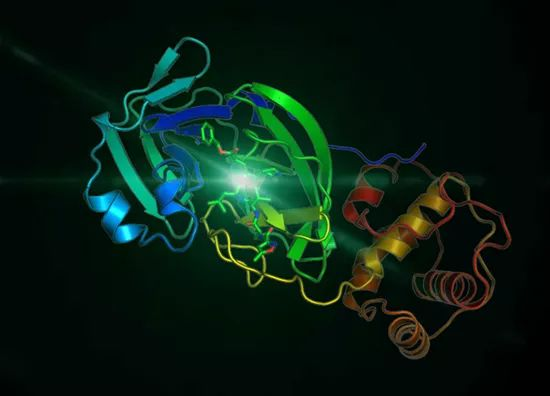
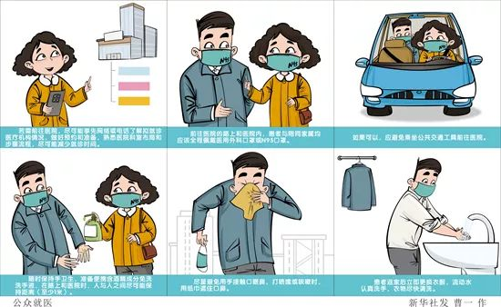
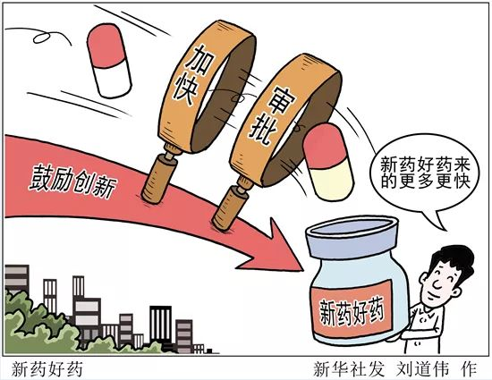
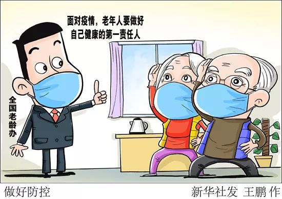

无症状感染会造成新冠防治的失控吗？
原文链接 备份链接 新型冠状病毒无症状感染者出现，令许多公众担心这会让病毒传播更佳防不胜防。事实上，大多数病毒、细菌导致的疾病都可能出现“无症状感染者”。新型冠状病毒的无症状感染者出现需要引起我们的警惕，但不必恐慌。 实习记者 | 李秀 …

图为新型冠状病毒3CL水解酶的高分率晶体结构。上海科技大学免疫化学研究所和中国科学院上海药物研究所抗2019-nCoV冠状病毒感染联合应急攻关团队供图
本文约6431字
预计阅读时间17分钟
中青报·中青网记者 邱晨辉
这个春节，一场始料未及的新冠肺炎疫情，打乱了人们对于鼠年的憧憬，不断滚动的疫情播报牵动着每个人的心。
在这场战“疫”中，中华预防医学会感染性疾病防控分会常务委员兼秘书长、中山大学附属三院感染科副主任林炳亮除了参与医务工作，还不断通过互联网做科普。他向中青报·中青网记者透露，这些天面对的线上咨询最高时达上万人，是平日里的几十倍，“疫情突然，太多民众对这个疫情和病毒认识不足，不知道怎么办……”
正如一位科研人员所说，很多人之所以表现出较强的担忧，是因为在这场没有硝烟的战争中，人们连“敌人”的底细都还没有摸清。那么，关于新型冠状病毒，我们究竟了解多少，其中哪些问题已经在科学界和医学界达成共识，哪些科学知识和医学常识又能帮助人们打好这场战“疫”？
为此，中青报·中青网记者采访了多位科学家和医生，进行解惑。
病毒怎么就盯上了人类
有人说，如果把所有的病毒列出来，人类发展史看上去就是一部与传染病做斗争的历史：天花病毒、甲流病毒、登革热病毒、SARS冠状病毒、埃博拉病毒等，都曾夺走人类大量的生命。这些直径约10-300纳米之间的微生物，在人类不经意间就可以完成一次入侵，其表现形式可能是一个喷嚏，也可能是一次身体接触。
“病毒会不断‘进军’各种宿主，这个宿主可以是一个简单的细菌，一个细胞，也可以是人类这样复杂的生物体。”中国科学院脑科学与智能技术卓越创新中心研究员仇子龙说，病毒简单来说就是“寄生虫”，不依附于其他生物就没法存活、没法繁殖。
当一个病毒感染宿主细胞时，将走过6个步骤：吸附、侵入、脱壳、生物合成、组装和释放。首先是吸附，病毒通过“识别”宿主细胞膜表面特有的受体蛋白分子，来“盯上”目标细胞。然后开展侵入——要么通过某种方式进入宿主细胞，要么直接将遗传物质注入宿主细胞之内。
接下来是脱壳，病毒的感染性核酸“脱下”蛋白质外壳，然后“马不停蹄”地进行生物合成——根据基因指令，借助宿主细胞提供的原料、能量和场所，来合成病毒的核酸和蛋白质；紧接着进行组装，新合成的病毒核酸和蛋白质，会组装成子代病毒；最后是释放，子代病毒释放到宿主细胞外。
这一次来袭的新型冠状病毒，其入侵步骤也是如此。以第一步的“吸附”为例，该病毒所要识别的，是人类呼吸道和肺部细胞表面的“血管紧张素转化酶2”（ACE2）。中科院武汉病毒所研究员石正丽团队近日在《自然》杂志发文证实了这一点。
截至目前，人们对新型冠状病毒的认识还很不够，尽管科学家在一些机理问题上取得一些进展，但还有很多临床表现尚未找到原因。
新病毒比SARS狡猾在哪儿
“狡猾！”“诡异！”这是林炳亮对新型冠状病毒的一个最初印象。
他告诉记者，截至目前，人们对新型冠状病毒的认识还很不够，尽管科学家在一些机理问题上取得一些进展，但还有很多临床表现尚未找到原因，如潜伏期患者具有感染性、无症状患者也有感染性、某些患者特别是重症患者持续排毒时间较长等，都是其“狡猾”“诡异”之处。
如今，科学家基于粪便已经检测出新型冠状病毒核酸，粪口传播途径的“可能存在”引发注意；此外，气溶胶传播途径的“可能存在”也陆续受到关注。林炳亮说，这些都在进行科学研究，相信很快会有结果。
“认识它，自然是好事，对普通民众来说，如厕前后规范洗手，盖好马桶盖再冲水，小区检查下水道是否畅通，做到这些就会大大减少感染的机会。”林炳亮希望，通过后续加强临床治疗和科学研究，加深对新冠肺炎及病毒的认识了解，慢慢揭开它“诡异的面纱”。

在他看来，这次疫情发展的速度和传播能力之所以如此强，有多方面的原因——
一是新型冠状病毒感染的肺炎疫情初期流行时，人们对这个新疾病的传播途径认识不足，导致疫情扩散。二是新型冠状病毒感染的肺炎存在潜伏期感染和无（轻）症状感染患者，患者没有或仅有轻微症状，容易漏诊，如何找出这类传染源是疫情防控的一大挑战。最后一点，则是新型冠状病毒感染的肺炎作为一种新的疾病，人群普遍对它没有免疫力，导致疫情流行初期的“所向披靡”。
而这，又牵出另一个追问：面对新冠病毒的来袭，人体的免疫系统究竟能起到何种作用？
人体如何反击病毒
一种病毒要想入侵人类体内，要突破“重重防线”，而人体也终将发现它们的存在，然后“奋起反抗”——这就是人体的免疫机制。
“打喷嚏、咳嗽、咳痰，这些都是免疫细胞与病毒作战的表现。”中国免疫学会副理事长、中国医学科学院基础医学研究所副所长黄波告诉记者，人类的呼吸系统尽管是一个与外界相通的开放系统，但这个系统从头到尾有多个环节，均部署免疫细胞“重兵把守”，防御病毒入侵。
据他介绍，新型冠状病毒感染人体时，通过鼻腔和口腔进入到人体咽喉部后，将进一步蔓延气管及更细的支气管，进而到达肺泡。不过，这些病毒进入肺泡的每一步，都会遭到免疫细胞的“防御”和“监视”。
具体来看，人体气道表面的大部分细胞，都含有“像刷子一样”的细长纤毛，这些纤毛表面还有能够分泌黏液的杯状细胞，这些黏液能够包裹病毒，并依靠纤毛向上推动，经气道从口腔内排出——这个过程就是人们日常所说的“咳痰”。当然，咳出的痰上，也就沾着不少病毒颗粒。
“如果病人出现干咳症状，则在一定程度上说明，病毒突破气管、支气管部位的防线，侵入到了肺泡，肺泡部位的免疫细胞，同样会被激活。”黄波说，如此一来，一整套环节中的免疫细胞都会被激活，释放细胞因子如白介素-1、白介素-6和肿瘤坏死因子等，直接刺激体温调节中枢，导致机体发热。
这也是为什么病毒感染后，人类会有发热症状，并且成为一个验证感染的关键指标。
此外，病毒入侵肺泡后，如果引起大量肺泡上皮细胞死亡，其释放的死亡物质，还会进一步刺激免疫细胞，引发更强的发热反应——具体表现就是持续高热。
“发热反应其实也属于人体的一种保护机制，一方面过高温度能够抑制病毒复制，另一方面，温度升高能够增强免疫细胞的防御能力。”黄波说。
除了发热症状外，这次新型冠状病毒感染的部分病人，还出现了腹泻等胃肠道症状。黄波说，这是由于咽喉与食道相连，部分病毒可能通过咽喉部进入到消化道，通过感染肠上皮细胞以及激活肠道免疫反应，产生相关症状。
不管年轻人免疫系统功能有多么好，不良生活方式如不规律作息、通宵玩手机、吸烟、饮酒以及旅途疲劳等，都能导致免疫功能临时紊乱，从而给病毒带来可乘之机。
症状为何轻重不同
那么，为什么感染者会有不同的反应症状？答案在于每个人体内免疫系统功能有强有弱。
黄波告诉记者，大多数年轻患者表现为轻症，正是因为他们的肺部上皮细胞状态较为良好，对病毒入侵的天然反应迅捷有效。他们的免疫细胞功能完整、良好，即便被新型冠状病毒感染，也可能不出现临床症状或者症状非常轻微。
老年人的情况则不然，随着年龄增长，人的机体功能开始退化，在应对病毒时，肺部上皮产生干扰素会“慢半拍”，产生的量也会少一些，这意味着，它们的免疫细胞释放干扰素以及吞噬病毒的能力会有所下降，于是人体整体抗病毒能力下降。
“如果老年人还有心血管疾病、糖尿病等基础性疾病时，其免疫系统功能更是薄弱，抵御病毒的能力更差，更容易被病毒感染。”黄波说。
目前来看，此次新型冠状病毒感染所致死亡患者，大多是老年人并且患有其他基础性疾病。
黄波说，正是由于这些患者抗病毒的免疫力低下，从鼻腔、咽喉部到气管和支气管等诸多环节，未能将病毒“有效阻击”，使得病毒侵犯肺泡，导致共用的肺泡血管壁膜受损，血管里的血液进入到肺泡，导致缺氧，引发危重病情。
当然，这并不意味着年轻人就可以高枕无忧了。
在黄波看来，不管年轻人免疫系统功能有多么好，不良生活方式如不规律作息、通宵玩手机、吸烟饮酒以及旅途疲劳等，都能导致免疫功能临时紊乱，从而给病毒带来可乘之机。
“人的症状轻重，也和入侵的病毒量有关。”黄波说，当病毒短时间内大量入侵机体时，即使是健壮的年轻人，其机体免疫系统也可能没法控制住全部的病毒。
这时，人类免疫系统的“最佳助攻”——药物和疫苗就要登场了。
药物研发急不得？
面对新型冠状病毒肺炎疫情发展的严峻形势，由各类机构和企业研发或筛选的“候选药物”“候选疫苗”频频被曝出，备受关注。那么对这类病毒，是疫苗的预防作用更明显，还是药物治疗的效果更佳？
“疫苗解决的是保护易感人群、群体防护的问题，而药物仅仅是针对患者，是个体。”林炳亮在接受记者采访时说，从长远来看，应该以疫苗为主，这对疫情控制或发生意义重大；但现阶段来看，重点是早发现、早诊断、早治疗，所以尽早研发或找到有效治疗药物“很重要”。

然而，新药的研发并不容易。
“大家都希望能尽快有好的药物，来对付这突如其来的不速之客，但我们必须清楚地认识到，药物的研发、生产、应用有基本的规律和时间要求。”中科院上海药物所管丽专门在网上撰文，来回应人们对于特效药的迫切期待。
一般情况下，新药研发从无到有，要历经药物发现、临床前研究和临床试验“三部曲”，最后才能进入医药市场用于治疗疾病。
这其中，最后一步“临床研究”，则又细分为Ⅰ期临床试验、Ⅱ期临床试验、Ⅲ期临床试验和IV期临床研究即药物上市后监测4个阶段，细说起来可谓步步荆棘，成功者凤毛麟角。
“很多人可能会有疑惑，紧急关头，我们不能缩短药物研发的时间和标准吗？”管丽说，可以加快研发速度，但仍要遵循新药研发规律。药物的研发是一项周期长、投资高、风险大的系统工程，每一个环节都来不得半点错误。
管丽给出一组数据：一个创新药物从实验室研究到最终上市可能需要10年；据不完全统计，全球的各大制药公司对于一个创新药物的资金投入，从最初到研发上市花费金额平均高达20多亿美元；从实验室研发出潜在有效的化合物，到最终在临床确定有效，并能够应用到市场的药物，可能1万个活性化合物苗子中，才能有一个化合物最终上市。
难度之大，可见一斑。
在没有疫情暴发的情况下，科研人员从拿到实验室可用的疫苗开始，到疫苗可以商用，将历经一个“远大于一年”的漫长过程。
分离疫苗毒株才迈出第一步？
至于疫苗的制备，所需的时间可能更长。
“前不久，新型冠状病毒的毒株已经分离出来，这为疫苗的研发提供了可能。”林炳亮说，一般来看，疫苗从研发到最终应用还要很长一段时间，希望越快越好。
减毒活疫苗和灭活疫苗，是疫苗中的主要两类。这其中，前者顾名思义就是病毒经过各种处理后， 毒性减弱，但仍保留其免疫原性，将其接种到人类身上，引发机体免疫反应，达到预防作用。至于灭活疫苗，则需对病毒进行一次培养，彻底“杀死”该病毒同时保留其毒株特征。
“这也是科学家要在疫情暴发初期，争取第一时间拿到活毒株体的一个原因。”中科院微生物所博士马越说，由于病原体的突变率不同，比较从不同病人身上分离得到的活毒株，也是一件非常重要的事。
不过，即便科学家已经掌握了可用的疫苗毒株，从研发到可以注射防疫，还要历经很长一段时间。
根据马越的说法，在没有疫情暴发的情况下，科研人员从拿到实验室可用的疫苗开始，到疫苗可以商用，将历经一个“远大于一年”的漫长过程。
在疫情暴发的当下，这个时间或许会大大缩短，甚至会有“绿色通道”。不过马越说，“还是需要时间，科研人员争分夺秒，日夜奋战，就是在和时间赛跑。”
理想的抗病毒药物，是既能作用于病毒增殖周期的某个或几个环节，予以干扰或阻断，又不影响宿主细胞的正常代谢。
打败细菌的抗生素为啥不管用
除了病毒，人类还有一个敌人——细菌，细菌感染曾一度成为人类最大的敌人，如当年被称作“黑死病”的鼠疫，3年时间就使欧洲人口减少三分之一。直到抗生素的发现和推广，人类才控制了细菌感染的暴发。
面对这次新型冠状病毒肺炎疫情，有的人发出疑问：既然尚无特效药，为何不能用抗生素治疗？中科院微生物所科研专家对此回应道：抗生素对病毒是无效的，至于原因，则还要从细菌和病毒的结构不同说起。
细菌拥有细胞壁，还有自己的核酸复制机器和核糖体——这就给了抗生素机会，抗生素只要针对这些靶点设计，就能保证杀伤细菌，而对人类副作用很小。
相应地，病毒没有细胞壁，没有自己的核酸酶，也没有核糖体，它所有的功能都要依靠宿主细胞来完成。这意味着，即便研发出能够杀死病毒的抗生素，也没有太大意义——因为，这种抗生素在杀死病毒的同时，也杀死了病毒所吸附的宿主细胞。
按照中科院微生物所科研人员的说法，理想的抗病毒药物，是既能作用于病毒增殖周期的某个或几个环节，予以干扰或阻断，又不影响宿主细胞的正常代谢。
比如常见的药物“病毒唑”，就提供了大量核苷酸类似物，“偷梁换柱”地取代了正常的核苷酸，这让病毒失去了复制能力，起到了抑制病毒扩增的作用。
科学家提醒道，面对病毒的治疗，人类至今尚未找到像抗生素一样普适性特效药，也因此，积极的治疗往往是调动人体自身的免疫能力去对抗病毒——因为只有生物本身，才真正懂得如何对抗生物。
由于病毒会变异，二次感染有可能发生，但概率会非常低下。这主要是由机体免疫系统的本质以及病毒变异的部位所决定。
会不会出现二次感染？
截至2月9日24时，据31个省（自治区、直辖市）和新疆生产建设兵团报告，确诊病例35982例，累计治愈出院病例3281例。由于疫情还在持续，这些治愈者有可能再次接触到导致疫情的元凶——新型冠状病毒，他们会不会发生二次感染？
黄波说，由于病毒会变异，二次感染有可能发生，但概率会非常低下。这主要是由机体免疫系统的本质以及病毒变异的部位所决定。
具体来看，人类免疫系统由固有免疫系统和获得性免疫系统两大部分组成。当新型冠状病毒侵犯呼吸道黏膜，固有免疫系统中的巨噬细胞，就会迅速“吃掉”入侵的病毒。如果固有免疫防线没有被病毒攻破，免疫反应就会到此为止，病毒也就被打败了。
如果固有免疫防线不幸被攻破了，获得性免疫作为“替补”，就会马上启动。获得性免疫是由T细胞和B细胞所介导，这两类细胞通常“定居”在机体的淋巴结和脾脏，它们一旦被激活，将显示极其强大的“杀毒”能力。
按照黄波的说法，当T细胞、B细胞和病毒的战斗结束后，会留下不到5%的效应性T细胞、B细胞，这些细胞在机体内存活几年、几十年乃至终身，这些细胞被称作记忆性T细胞或记忆性B细胞。
“由于当前缺乏特异性抗病毒的药物干预，新型冠状病毒肺炎患者康复基本上依赖于机体的免疫细胞——特别是激活的T细胞和B细胞。”黄波说，记忆性T细胞、记忆性B细胞会在体内长期存在，时刻监视最初感染机体的冠状病毒再次入侵，防止二次感染。
通俗地说，这些记忆性T细胞或记忆性B细胞，在第一次见到病毒之后，即便过了多年，再次遇见该病毒，仍能够一眼认出，从而启动记忆反应。黄波说，这些细胞的记忆反应速度，如同固有免疫反应一样迅速，可以将再次入侵的病毒迅速控制住。
人类的免疫系统将再次证明，它是消灭邪恶病毒的无冕之王。
提高免疫力到底有多重要
黄波认为，人类的历史是一部与疾病包括病毒斗争的历史，远的例如天花病毒，近的包括脊髓灰质炎病毒，我们人类都最终战胜了这些极其可怕的病毒。
在这个过程中，人类的免疫系统也在不断进化，变得越来越强大。就此次新型冠状病毒而言，大多数个体接触到病毒后，并无症状或仅出现轻微症状，有的出现发热胸闷等症状，经一段时间后自行好转；但是对于免疫功能不强或者低下者，病毒感染却是一场严峻考验。

对于这些人群，如何改善他们的免疫功能？
黄波建议，除了规律作息，当前可以食用一些具有增强天然免疫功能的食物，如香菇、枸杞、灵芝粉、黑木耳等。这些食材富含植物的多糖，能够刺激天然免疫细胞表面，使得这些免疫细胞处于一种预刺激状态，从而加强对病毒入侵的监视。
黄波通过记者呼吁：希望公众明白了机体免疫系统对人体的保护机制后，能减少新型冠状病毒带来的恐惧和无力感。他说，“我坚信，人类的免疫系统将再次证明，它是消灭邪恶病毒的无冕之王。”
中国青年报·中青在线出品
微信编辑 | 陈轶男

觉得好看请点这里
原文链接 备份链接 新型冠状病毒无症状感染者出现，令许多公众担心这会让病毒传播更佳防不胜防。事实上，大多数病毒、细菌导致的疾病都可能出现“无症状感染者”。新型冠状病毒的无症状感染者出现需要引起我们的警惕，但不必恐慌。 实习记者 | 李秀 …
原文链接 备份链接 临时报道小组 所有的鱼 所有的鱼 About Feature 地球被毁灭之前究竟发生了什么？ Today 根据丁香医生实时数据，截至 2020 年 2 月 8 日 18 时，全国累计确诊病例 34662 例， …
原文链接 备份链接 02.02.2020本文字数：3224，阅读时长大约5.5分钟 导读：病毒传播路径的信息，为何在病毒全面开花扩散之后，源源不断地发表在论文上。 作者 | 第一财经 马晓华 从新型冠状病毒开始踏足武汉，到蔓延至全国甚至 …
原文链接 备份链接 【财新网】（记者 黄蕙昭）从全国看，疫情还处于早期散发阶段。国家卫健委主任马晓伟在1月26日下午国务院新闻办举行的发布会上表示。截至1月26日20时，中国确诊新型冠状病毒肺炎病例2058例，其中湖北1052例，而非湖 …
原文链接 备份链接 随着疫情消息的增多，各种关于其来源、如何传播与防控的“传言”也接踵而来。为此，我们采访了相关领域的专业人士，试图解答十个公众最为关心的问题。 记者 | 许冰清 肖文杰 倪妮 张云亭 项维肖 毛怡玫 实习记者 | 文思 …